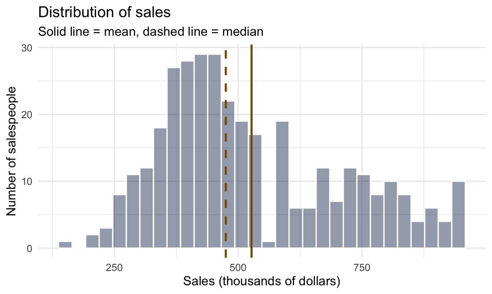
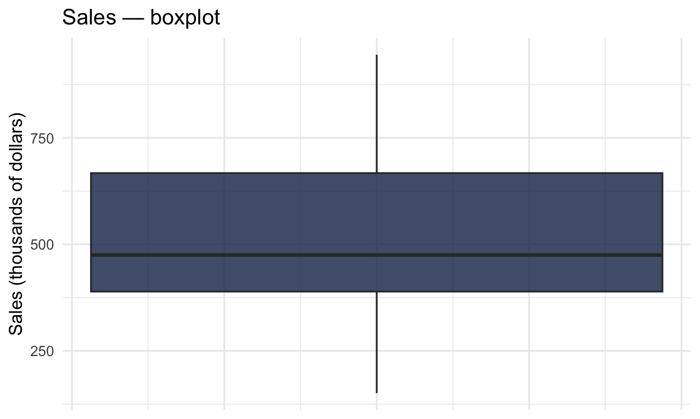
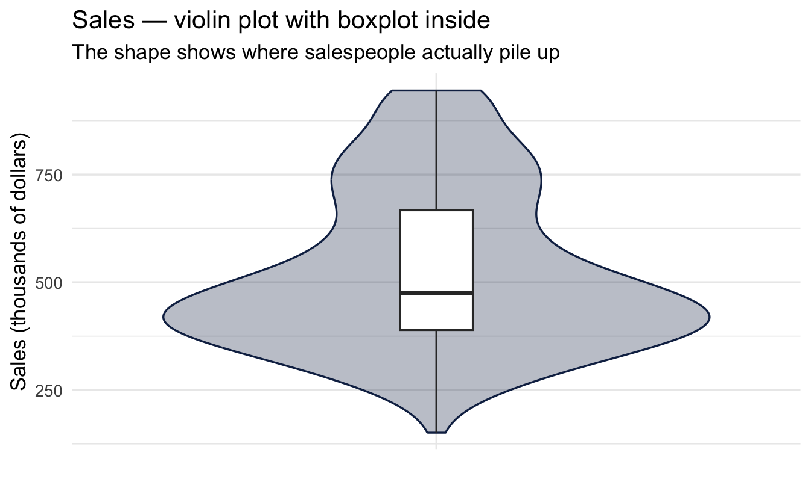
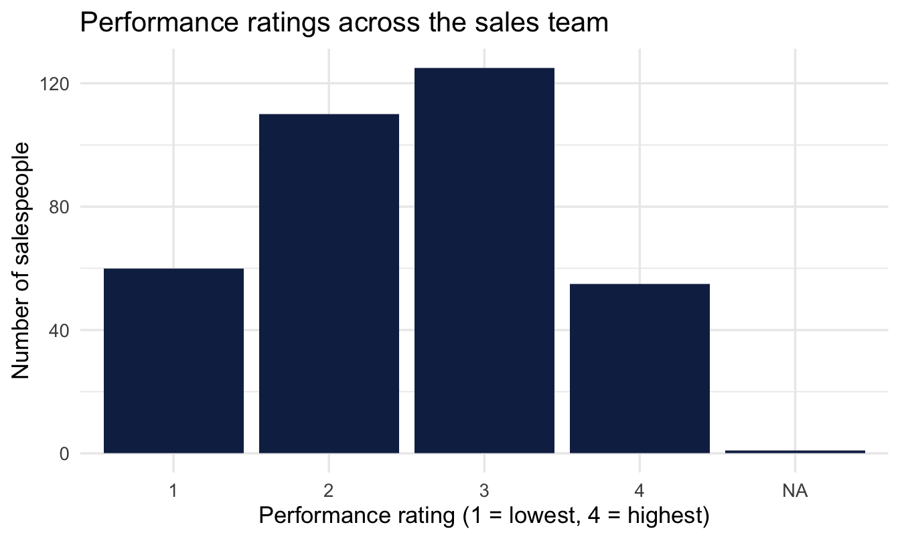
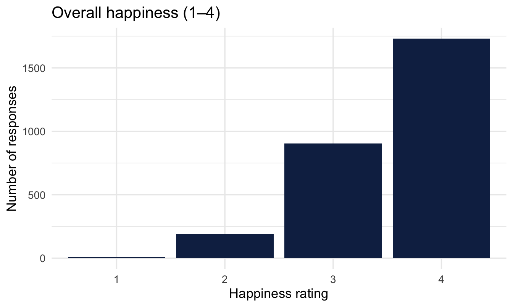
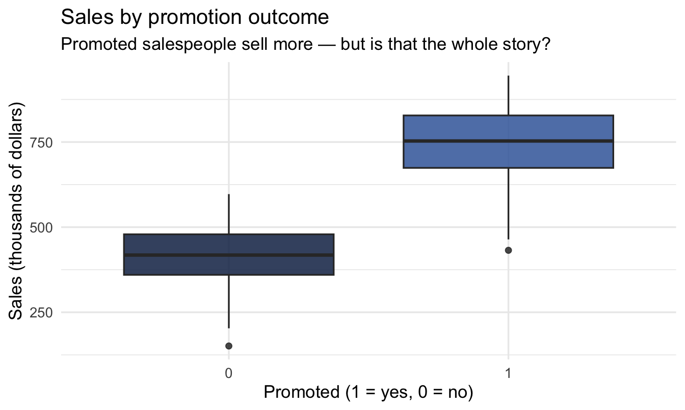
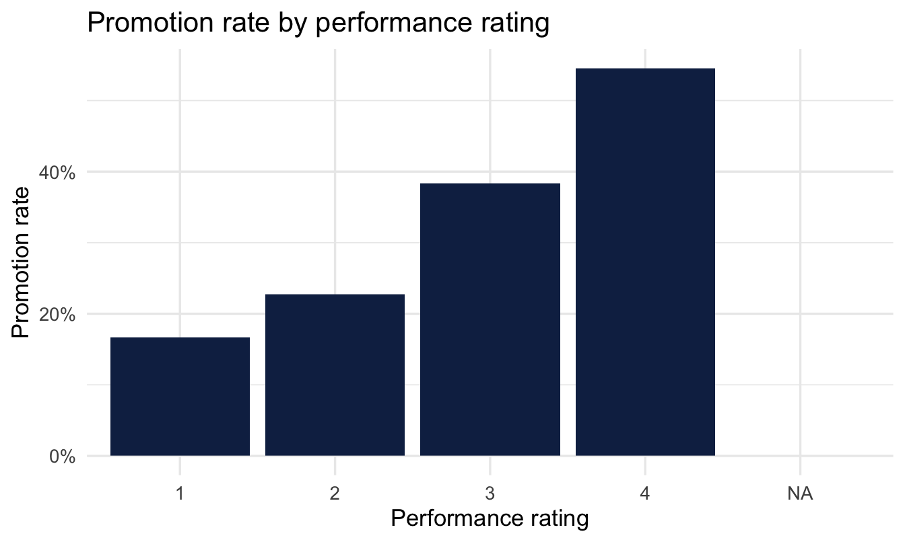

library(tidyverse)
library(peopleanalyticsdata)
library(skimr)
theme_set(theme_minimal(base_size = 13))
data("salespeople", package = "peopleanalyticsdata")
data("employee_survey", package = "peopleanalyticsdata")1 Meeting Your Data
Welcome
The data a people analyst actually works with
Almost nothing arrives in one piece. A People Analytics team’s data is assembled from wherever it happens to live:
- The HRIS or HRMS — Workday, SuccessFactors, BambooHR — holding the core record: who works here, in what role, reporting to whom, since when, on what salary.
- Survey platforms — engagement, pulse, onboarding, exit — each with its own scale and its own idea of an employee identifier.
- Other HR systems — the ATS for recruitment, the LMS for learning, performance management, absence, payroll. Rarely designed to talk to each other.
- And, always, spreadsheets. Someone’s headcount tracker. Somebody’s list of high-potential employees. The org design work that never made it into a system.
Merging these is a large part of the job, and it’s where most of the errors that reach a boardroom are born. This book won’t teach you that plumbing — but everything below assumes you’re sceptical about what came out of the other end of it.
Most of the job is presenting it
Be honest about how HR analysis actually gets spent. Think of the dashboards and monthly packs that fill HR departments: headcount by division, attrition against last year, time-to-hire by recruiter, engagement scores sliced eleven ways. Producing them consumes an enormous share of an analyst’s week, and most of it is description — counting, averaging, and drawing bars.
That work is worth doing well. It’s also worth doing thoughtfully, which is the difference this chapter is really about.
Understand it before you analyse it
Whatever you’ve been asked for, the first move is the same: find out what you actually have. This is exploratory data analysis (EDA) — a term coined by John Tukey to describe looking at data with an open mind before testing anything against it. In practice it’s a short list of habits:
- Check the structure — how many rows, how many columns, what type is each one, and what does a single row represent?
- Check the gaps — which values are missing, how many, and is the missingness patterned?
- Look at each variable on its own — its centre, its spread, its shape.
- Hunt for the impossible and the implausible — negative tenure, a salary of 1, an engagement score of 9 on a 4-point scale, six people reporting to themselves.
- Look at variables in pairs — does anything move together in a way you didn’t expect?
- Sense-check against the business. You know roughly how many people work here. Does the data agree?
None of that is glamorous, and all of it is faster than explaining a wrong number afterwards.
Always ask why they’re asking
Even when the request is purely descriptive — “can you send me attrition by department for the last six quarters?” — the great analyst does one more thing before opening the data: works out what the person is going to do with it.
Nobody wants a table. They want to decide something, or defend something, or reassure someone. Once you know which, you can often offer an approach that serves them better than the one they asked for — and that’s the difference between an analyst who fields requests and one who gets invited to the conversation earlier.
Note
This matters more than it sounds, and it’s not a soft skill. We come back to it at the end of this chapter, because there’s a specific, predictable thing people are usually doing with historical data — and they’re usually doing it badly.
How to read this chapter
As we talk through each idea, run the code chunk next to it, change a number, and see what happens. This chapter follows the same rhythm every chapter in this book will: a little theory, a lot of code you can poke at.
Today is deliberately gentle: no models, no probability, no maths. We meet the two datasets we’ll use throughout the book, and learn to describe data.
What you’ll be able to do by the end
- Load a dataset into R and inspect its structure
- Tell categorical from numeric variables — and why it matters
- Describe a numeric variable with centre and spread
- Describe a categorical variable with counts and proportions
- Read histograms, boxplots, violin plots and bar charts — and know which to put in front of a manager
- Explain why a request for historical data is usually a question about the future
Why start here?
Important
Every analysis begins by describing the data. Before anyone believes your model, they want to know you understand what you’re working with. Most analytical mistakes are made before any model is fitted, by someone who didn’t look at their data first.
1.1 Setup
We load the tidyverse, set a consistent plot theme, and load our two running datasets from the peopleanalyticsdata package (created by Keith McNulty — see the Welcome chapter for the full credit). This same setup block appears, in spirit, at the top of every chapter in this book.
TipIf you get a “package not found” error
Run this once in the console (not in a code chunk):
install.packages(c("tidyverse", "peopleanalyticsdata", "skimr"))1.2 What is a dataset?
1.2.1 Rows and columns
A dataset is just a table:
- Each row is one observation — one thing you measured
- Each column is one variable — one thing you measured about it
- Each cell is one value
That three-part description has a name: tidy data. It’s the convention the whole tidyverse — dplyr, ggplot2, and everything else we use — is built around, and it’s why those tools compose so neatly. Give a tidy table to group_by(), summarise() or ggplot() and it will do the obvious thing without argument.
NoteTidy for analysis, not necessarily for reading
Conveniently, tidy is roughly how HR systems already store data. An HRIS keeps one row per employee, or one row per absence event, or one row per survey response — because that’s the sane way to store records.
Inconveniently, it’s often the worst way to present them. Nobody wants a thousand-row table. A manager wants absence rates as a small grid of departments down the side and months across the top — which is emphatically not tidy, because the column headings have become data.
Both shapes are correct for their purpose. Analyse long, present wide, and use pivot_longer() and pivot_wider() to move between them.
ImportantThe sentence you must always be able to finish
“One row is one ___.”
Get this wrong and every number that follows is wrong. In salespeople, one row is one salesperson.
1.2.2 Our two datasets
We’ll use these two throughout the book, so it’s worth learning them properly.
salespeople— one row per salesperson. Sales figures, customer ratings, performance, and whether they were promoted. Used to ask “what predicts who gets promoted?”employee_survey— one row per survey response to an engagement survey, on a four-point scale. This is survey data — exactly the shape most People Analytics teams collect constantly.
1.2.3 A first look
glimpse() shows the structure: every column, its type, and the first few values.
glimpse(salespeople)Rows: 351
Columns: 4
$ promoted <int> 0, 0, 1, 0, 1, 1, 0, 0, 0, 0, 0, 1, 0, 0, 0, 0, 0, 0, 0,…
$ sales <int> 594, 446, 674, 525, 657, 918, 318, 364, 342, 387, 527, 7…
$ customer_rate <dbl> 3.94, 4.06, 3.83, 3.62, 4.40, 4.54, 3.09, 4.89, 3.74, 3.…
$ performance <int> 2, 3, 4, 2, 3, 2, 3, 1, 3, 3, 3, 3, 2, 3, 2, 3, 1, 4, 2,…So we have 351 salespeople described by 4 variables.
glimpse() answers what columns do I have. It deliberately does not tell you what is in them — that comes shortly, with skim(), which is the tool we use for the fuller look. Two functions, two jobs, and it is worth keeping them separate in your head.
1.2.4 Two kinds of variable
This distinction drives every choice you make later.
| Numeric | Categorical | |
|---|---|---|
| Meaning | arithmetic makes sense | a label for a group |
| Examples | sales, customer_rate |
promoted, performance |
| Describe with | centre and spread | counts |
| Picture | histogram, boxplot | bar chart |
Averaging performance (a 1–4 rating) is defensible only if you’re comfortable treating it as a genuine number rather than an ordered label — we’ll come back to exactly that question, properly, in Chapter 18. For now, treat it as categorical.
1.2.5 The other dataset
glimpse(employee_survey)Rows: 2,833
Columns: 14
$ Happiness <int> 4, 3, 4, 4, 3, 4, 3, 4, 4, 4, 4, 4, 3, 4, 4, 4, 3, 4, 4, 4, …
$ Ben1 <int> 4, 3, 3, 3, 4, 4, 4, 4, 4, 4, 4, 4, 3, 3, 4, 3, 2, 4, 4, 3, …
$ Ben2 <int> 4, 3, 4, 4, 3, 4, 3, 3, 4, 4, 4, 4, 3, 4, 4, 4, 3, 4, 4, 3, …
$ Ben3 <int> 4, 3, 4, 3, 3, 4, 3, 3, 4, 4, 4, 4, 3, 4, 4, 4, 3, 4, 4, 3, …
$ Work1 <int> 4, 3, 2, 3, 2, 4, 2, 3, 3, 4, 4, 3, 3, 3, 3, 3, 2, 3, 3, 3, …
$ Work2 <int> 4, 3, 2, 3, 2, 4, 1, 2, 3, 4, 3, 3, 2, 2, 2, 2, 3, 2, 3, 3, …
$ Work3 <int> 3, 3, 2, 3, 1, 4, 1, 2, 2, 2, 3, 3, 2, 3, 2, 3, 3, 2, 3, 3, …
$ Man1 <int> 4, 4, 2, 3, 3, 4, 2, 3, 4, 4, 4, 4, 2, 4, 4, 3, 2, 3, 4, 4, …
$ Man2 <int> 4, 4, 3, 4, 3, 4, 2, 3, 3, 4, 3, 4, 3, 4, 4, 4, 3, 4, 4, 4, …
$ Man3 <int> 4, 4, 3, 4, 3, 4, 2, 3, 4, 4, 4, 4, 4, 4, 4, 4, 3, 4, 4, 4, …
$ Car1 <int> 4, 4, 3, 4, 2, 4, 4, 4, 4, 4, 4, 4, 4, 4, 4, 4, 3, 3, 4, 3, …
$ Car2 <int> 4, 3, 4, 4, 2, 4, 3, 4, 4, 4, 4, 4, 4, 3, 4, 4, 2, 4, 4, 4, …
$ Car3 <int> 4, 4, 2, 4, 2, 4, 3, 4, 4, 4, 4, 4, 3, 3, 4, 4, 2, 4, 4, 3, …
$ Car4 <int> 4, 4, 3, 4, 2, 4, 3, 4, 4, 4, 4, 4, 3, 3, 4, 3, 2, 3, 4, 3, …Your turn
Look at that output and answer three questions before reading on. What does one row represent — and how do you know? Why are there so many more rows here than in salespeople? And are these columns numeric or categorical, given every one of them holds a whole number from 1 to 4?
The third question is genuinely hard, and it’s the one Chapter 18 is built around.
1.3 Describing a number
1.3.1 Two questions, always
For any numeric variable, ask:
- Where is the middle? — the typical value
- How spread out is it? — how much values vary
Answer both and you’ve described it. Everything else is detail.
1.3.2 Mean vs median
Two ways to say “the middle”:
- The mean adds everything and divides — every value affects it, including extreme ones
- The median is the middle value when sorted — it ignores how extreme the extremes are
When someone says “average” they almost always mean the mean — it’s what AVERAGE() computes in Excel, and it’s what a stakeholder pictures when they ask for one. That’s fine when the data is roughly symmetric, and misleading when it isn’t.
Which one, in HR
The choice is usually decided by whether a long tail exists:
- Salary → median. Pay distributions are right-skewed: a handful of senior people pull the mean above what almost anyone earns. It is not an accident that UK gender pay gap reporting requires organisations to publish both the mean and the median gap — the pair tells you something neither does alone, and a large difference between them is itself a finding about how pay is distributed.
- Tenure → median. A few twenty-year veterans will drag the mean somewhere no current employee actually sits.
- Time to hire → median. One requisition open for eleven months can add a fortnight to the mean across a whole quarter.
- Absence days → median, usually, and often better still as a distribution: most people take very few days, a small number take many.
- Engagement scores → mean is fine. The scale is bounded 1 to 5, so there’s no tail to distort anything, and means are easier to compare across teams.
Important
If you’re not sure, compute both. If they agree, report the mean and move on. If they don’t, you’ve learned something about the shape of your data that you needed to know anyway.
NoteWhy the difference matters
Nine salespeople sell $40,000 each and one sells $2,000,000. The mean is a figure nobody near actually sold. The median is $40,000.
Which better describes a typical salesperson?
1.3.3 The numbers for sales
glimpse() told us what the columns are. To see what is in them, the one-line answer is skim(), from the skimr package:
skim(salespeople)| Name | salespeople |
| Number of rows | 351 |
| Number of columns | 4 |
| _______________________ | |
| Column type frequency: | |
| numeric | 4 |
| ________________________ | |
| Group variables | None |
Variable type: numeric
| skim_variable | n_missing | complete_rate | mean | sd | p0 | p25 | p50 | p75 | p100 | hist |
|---|---|---|---|---|---|---|---|---|---|---|
| promoted | 0 | 1 | 0.32 | 0.47 | 0 | 0.00 | 0.00 | 1.00 | 1 | ▇▁▁▁▃ |
| sales | 1 | 1 | 527.01 | 185.22 | 151 | 389.25 | 475.00 | 667.25 | 945 | ▂▇▅▃▃ |
| customer_rate | 1 | 1 | 3.61 | 0.89 | 1 | 3.00 | 3.62 | 4.29 | 5 | ▁▃▆▇▆ |
| performance | 1 | 1 | 2.50 | 0.95 | 1 | 2.00 | 3.00 | 3.00 | 4 | ▃▇▁▇▃ |
That is a lot of table at once, so read it in this order.
n_missing first. It counts the empty cells in each column, and it is the reason for the na.rm = TRUE arguments you are about to meet. We come back to it properly at the end of the chapter. Getting this on screen in the first minute, rather than discovering it later, is the main reason this book uses skim() rather than the shorter summary().
Then the middle. mean is the mean and p50 is the median. When those two disagree, the column is skewed — the distinction we were just drawing, now visible for every column at once.
Then the two ends. p0 and p100 are the smallest and largest values, and this is where impossible numbers show themselves: a negative tenure, a salary of 1, an engagement score of 9 on a four-point scale.
skim() also groups its output by variable type, giving character columns and numeric columns separate tables with different summaries. Here there is only one table, because every column in salespeople is stored as a number. That includes performance, which is really a 1–4 rating: a category stored as a number. Neither skim() nor R can tell the difference, which is exactly why the numeric-versus-categorical judgement earlier in this chapter is yours to make rather than the computer’s.
The tidyverse version is more typing but composes with everything else:
salespeople |>
summarise(
mean_sales = mean(sales, na.rm = TRUE),
median_sales = median(sales, na.rm = TRUE),
sd_sales = sd(sales, na.rm = TRUE)
) mean_sales median_sales sd_sales
1 527.0057 475 185.2245
TipWhat
na.rm = TRUE is doing there
sales has a missing value in it, and R’s summary functions refuse to guess. Without na.rm = TRUE they hand back NA instead of a number — or, in quantile()’s case, an outright error.
Treat na.rm = TRUE as a habit worth having by default whenever you summarise real data. The last section of this chapter explains why it’s a habit rather than a fix.
The mean is 527 and the median is 475 (both in thousands of dollars).
1.3.4 See it: the histogram
ggplot(salespeople, aes(x = sales)) +
geom_histogram(bins = 30, fill = "#122a52", alpha = 0.45, colour = "white") +
geom_vline(xintercept = mean(salespeople$sales, na.rm = TRUE),
1 colour = "#8a5a00", linewidth = 1) +
geom_vline(xintercept = median(salespeople$sales, na.rm = TRUE),
colour = "#8a5a00", linewidth = 1, linetype = "dashed") +
labs(
title = "Distribution of sales",
subtitle = "Solid line = mean, dashed line = median",
x = "Sales (thousands of dollars)", y = "Number of salespeople"
)- 1
- Amber, and the same amber for both. The two lines are the point of this chart, so they need to read clearly against the navy bars — which a soft grey does not. Linetype, not colour, separates the mean from the median, so that the pair still reads as one idea.

1.3.5 What the shape tells you
Most salespeople cluster in the middle, with a tail of high performers stretching to the right — that tail is exactly why the mean sits above the median.
Important
When the mean and median disagree, the data is skewed — and you should report both.
1.3.6 Spread: two measures
- Standard deviation (SD) — roughly the typical distance from the mean. It pairs with the mean, and like the mean it is pulled by every extreme value.
- Interquartile range (IQR) — the range covering the middle 50% of the data, from the 25th to the 75th percentile. It pairs with the median, and like the median it is barely affected by extremes.
salespeople |>
summarise(
sd = sd(sales, na.rm = TRUE),
q25 = quantile(sales, probs = 0.25, na.rm = TRUE),
q75 = quantile(sales, probs = 0.75, na.rm = TRUE),
iqr = IQR(sales, na.rm = TRUE)
) sd q25 q75 iqr
1 185.2245 389.25 667.25 278Note the pairing. If you report a mean, report an SD next to it; if you report a median, report the IQR. Mixing them — a median with a standard deviation — is a small tell that someone reached for whichever number came to hand.
1.3.7 The boxplot
ggplot(salespeople, aes(y = sales)) +
geom_boxplot(fill = "#122a52", alpha = 0.8) +
labs(title = "Sales — boxplot", y = "Sales (thousands of dollars)", x = NULL) +
theme(axis.text.x = element_blank())
1.3.8 Reading it, and when not to use it
A boxplot is a five-number summary drawn to scale. The box runs from the 25th to the 75th percentile — so the box is the IQR, and the middle half of your salespeople sit inside it. The line across the box is the median. The whiskers reach out to the furthest points within 1.5 × IQR of the box, and anything beyond that is drawn as an individual dot.
Analysts love these, for good reasons: they’re compact, they encode five numbers plus outliers in almost no ink, and — the real attraction — you can line up eight of them side by side and compare groups at a glance.
ImportantWhy they often fail in front of a manager
Three problems, and they compound:
- They need explaining. If you have to say “the whiskers are 1.5 times the interquartile range” out loud in a meeting, you’ve spent your audience’s attention on the chart instead of the finding.
- They hide the shape. A boxplot of a two-humped distribution — say, a team split between long-tenured staff and a recent intake — looks identical to a boxplot of a single broad group. That’s a genuinely important difference to conceal.
- They hide the sample size. A box drawn from six people looks exactly as solid as one drawn from six hundred. In People Analytics, where team sizes vary wildly, this is the dangerous one — and it’s the problem Chapters 8, 14 and 15 exist to solve properly.
1.3.9 The violin plot
A violin plot solves the first two by drawing the actual shape of the distribution — a smoothed histogram, mirrored to make it symmetric. Wide means many people at that value; narrow means few. Most people read one correctly without instruction, because width maps onto “how many” the way intuition expects.
You don’t have to choose. The usual recommendation is both — the violin for the shape, a slim boxplot inside it for the summary statistics:
ggplot(salespeople, aes(x = "", y = sales)) +
geom_violin(fill = "#122a52", alpha = 0.30, colour = "#122a52") +
1 geom_boxplot(width = 0.12, fill = "white", outlier.shape = NA) +
labs(title = "Sales — violin plot with boxplot inside",
subtitle = "The shape shows where salespeople actually pile up",
y = "Sales (thousands of dollars)", x = NULL)- 1
-
outlier.shape = NAsuppresses the boxplot’s outlier dots, since the violin already shows the tails. Without it you’d draw the same extreme salespeople twice.

Compare the two figures. The boxplot says sales are right-skewed. The violin shows you how — a dense cluster of salespeople around 400, thinning steadily upward, with no second group hiding anywhere.
Tip
Whichever you use, add the group size to the axis label — Sales team (n = 42) — or plot the individual points on top when there are few enough. It costs nothing and it stops a six-person team being read with the same confidence as a six-hundred-person one.
1.4 Describing a category
1.4.1 Count, don’t average
There’s no “average performance rating” that means much on its own. Instead we ask: how many fall into each group, and what share is that?
salespeople |>
count(performance) |>
mutate(proportion = round(n / sum(n), 3)) performance n proportion
1 1 60 0.171
2 2 110 0.313
3 3 125 0.356
4 4 55 0.157
5 NA 1 0.0031.4.2 The bar chart
salespeople |>
count(performance) |>
ggplot(aes(x = factor(performance), y = n)) +
geom_col(fill = "#122a52") +
labs(title = "Performance ratings across the sales team",
x = "Performance rating (1 = lowest, 4 = highest)", y = "Number of salespeople")
1.4.3 Bars vs histograms
TipDon’t mix them up
- A bar chart shows counts for a handful of labels. Gaps between bars are meaningful.
- A histogram shows the shape of a numeric variable. Bars touch because the underlying scale is continuous.
Your turn
Make the same count-and-bar-chart for promoted. What share of the sales team was promoted?
# Your code here1.5 The survey data
1.5.1 Meet the engagement survey
Each row is one employee’s response, with an overall Happiness score (1–4) and several sub-scale items on the same scale: benefits (Ben1-3), work environment (Work1-3), management (Man1-3), and career prospects (Car1-4).
Note
This is exactly the shape of an engagement survey you’ll meet in real People Analytics work — which is why we’ll keep coming back to it.
employee_survey |>
summarise(
mean_happiness = mean(Happiness, na.rm = TRUE),
median_happiness = median(Happiness, na.rm = TRUE),
sd_happiness = sd(Happiness, na.rm = TRUE)
) mean_happiness median_happiness sd_happiness
1 3.537593 4 0.63341691.5.2 How employees rate their happiness
ggplot(employee_survey, aes(x = factor(Happiness))) +
geom_bar(fill = "#122a52") +
labs(title = "Overall happiness (1–4)",
x = "Happiness rating", y = "Number of responses")
1.5.3 Why that shape matters
Survey scores are bounded (they can’t go below 1 or above 4) and often pile up toward one end.
Important
Keep that shape in mind. It’s extremely common in engagement data, it breaks some standard modelling assumptions, and it’s exactly why Chapter 18 exists.
1.6 A first look at relationships
Description gets interesting when we ask whether one variable differs across another. We’re not modelling yet — just looking.
1.6.1 Does sales differ by promotion outcome?
salespeople |>
group_by(promoted) |>
summarise(
mean_sales = mean(sales, na.rm = TRUE),
median_sales = median(sales, na.rm = TRUE),
n = n()
)# A tibble: 2 × 4
promoted mean_sales median_sales n
<int> <dbl> <int> <int>
1 0 418. 418 238
2 1 755. 753 113ggplot(salespeople, aes(x = factor(promoted), y = sales, fill = factor(promoted))) +
geom_boxplot(alpha = 0.85, show.legend = FALSE) +
scale_fill_manual(values = c("#122a52", "#3d68a8")) +
labs(title = "Sales by promotion outcome",
subtitle = "Promoted salespeople sell more — but is that the whole story?",
x = "Promoted (1 = yes, 0 = no)", y = "Sales (thousands of dollars)")
That question — is that the whole story? — is what the rest of this book teaches you to answer properly.
1.6.2 A trick worth knowing
Because promoted is coded 0/1, its mean is the promotion rate. We’ll lean on this constantly.
salespeople |>
group_by(performance) |>
summarise(
n = n(),
promotion_rate = mean(promoted, na.rm = TRUE)
)# A tibble: 5 × 3
performance n promotion_rate
<int> <int> <dbl>
1 1 60 0.167
2 2 110 0.227
3 3 125 0.384
4 4 55 0.545
5 NA 1 0 salespeople |>
group_by(performance) |>
summarise(promotion_rate = mean(promoted, na.rm = TRUE)) |>
ggplot(aes(x = factor(performance), y = promotion_rate)) +
geom_col(fill = "#122a52") +
scale_y_continuous(labels = scales::percent) +
labs(title = "Promotion rate by performance rating",
x = "Performance rating", y = "Promotion rate")
1.7 Messy reality: missing values
Real organisational data is rarely as clean as it first looks — and, in fact, neither is this teaching dataset. Let’s check what we’re actually working with:
colSums(is.na(salespeople)) promoted sales customer_rate performance
0 1 1 1 One missing value in sales, one in customer_rate, one in performance, none in promoted. Out of 351 rows that’s almost nothing — and it’s still enough to turn a mean into NA, which is exactly why the calculations earlier in this chapter used na.rm = TRUE.
Notice too that the gaps aren’t only in sales. Had we checked only the column we happened to be summarising, we’d have missed two of them.
mean(some_vector) # returns NA if anything is missing
mean(some_vector, na.rm = TRUE) # ignores the missing values
quantile(some_vector, probs = 0.25) # errors outright if anything is missing
quantile(some_vector, probs = 0.25, na.rm = TRUE) # works
ImportantKnowing your gaps
Notice the two different failure modes above: mean() fails quietly — it hands you back NA and lets you not notice — while quantile() fails loudly, with an error. The loud failure is the friendlier one. The quiet one is how a wrong number ends up in a report. Deciding what to do about missing data — ignore it, exclude those rows, or fill it in — is a decision you must make and justify, not something to discover by accident halfway through a model.
1.8 What they’re really asking for
We promised at the start of the chapter to come back to this, and it’s a key idea of this chapter.
In my experience, when someone asks for historical data, they very rarely care about the past. Attrition last year is over; nobody can do anything about it. They want to look at the past because they are trying to work out what is going to happen next — and whether they should do something about it.
The request is descriptive. The question underneath it is predictive. And we hand over the description and let them do the hard part in their heads.
1.8.1 People are not good at this
That last step — looking at history and inferring the future — is one of the most thoroughly documented weaknesses in human judgement. Decades of research on decision-making under uncertainty finds the same failures, and every one of them turns up monthly in HR reporting:
- Small samples are trusted far too much. Kahneman and Tversky called this belief in the “law of small numbers”: people expect a small group to look like the population, so a 40% attrition figure from a five-person team is read with roughly the confidence of a figure from five hundred. Team-level dashboards are built almost entirely from small samples.
- Regression to the mean is mistaken for causation. Extreme results tend to be followed by less extreme ones, for no reason other than arithmetic. So the worst-scoring team improves after the intervention, the best-performing manager slips the following year, and both movements get explained with a story. This is the single most common way HR credits itself with an effect it didn’t have.
- Noise is read as trend. Two points make a line. Attrition ticks from 11% to 13% and it becomes “a worrying upward trend” in the commentary, when it’s well within the wobble you’d see from a stable process.
- Confidence intervals are far too narrow. When people are asked for a range they’re 90% sure about, the truth falls outside it much more often than 10% of the time. We are systematically more certain than we are right.
- The story arrives before the evidence. Give someone a chart and a few seconds and they will produce a causal explanation for whatever it shows — including, in experiments, for patterns that were generated at random.
None of this is stupidity, and pointing it out to stakeholders doesn’t help. These are the default settings of human intuition working on incomplete information, and analysts have them too.
ImportantWhich is the actual argument for the rest of this book
If the inference is going to happen anyway, it’s better done by a method than by a hunch.
That’s what the following chapters are for. Rather than hand over a number and hope, you can present the data and a systematic interpretation of it: an estimate, an honest range around that estimate, and where appropriate a forecast that already accounts for how little data a small team really provides. The uncertainty gets quantified and shown rather than left to be misjudged.
Do that, and you haven’t just answered the question that was asked. You’ve answered the one that was meant — and given HR, and the managers it serves, a genuinely better basis for a decision.
On the job
ImportantWhy this matters day to day
Every People Analytics deliverable opens with a description of the data: how many people, what the key variables look like, and where the gaps are. Before anyone believes a model, they want to know you understand what you’re working with — and a stakeholder who spots a headcount that doesn’t match theirs will not hear a word of the rest.
Two habits to take away today. Check the gaps before you summarise anything, because a quiet NA becomes a wrong number in a board pack. And ask what the request is for, because the answer changes what you should send back.
Summary
NoteToday you learned
- Exploratory data analysis comes before everything: structure, gaps, shapes, impossible values, and a sense-check against what you know of the business.
- A dataset is rows (observations) × columns (variables) with one value per cell — tidy data. Analyse long, present wide.
- Describe a numeric variable by its centre (mean, median) and spread (SD, IQR); a gap between mean and median signals skew. In HR that usually means median for pay, tenure and time-to-hire.
- Report mean with SD, or median with IQR — pair them properly.
- Describe a categorical variable with counts and proportions.
- Histograms, boxplots and violin plots picture numbers; bar charts picture categories. Boxplots are for analysts; violins travel better to managers, and neither shows the sample size unless you add it.
- Check every column for missing values before you summarise any of them, and decide what to do about the gaps deliberately.
- A request for historical data is usually a question about the future — and human intuition handles that step badly. Supplying the inference, with its uncertainty, is what the rest of this book is for.
- A 0/1 variable’s mean is a proportion — our bridge to next chapter.
Next chapter
Thinking in chances — the first step towards supplying that inference rather than leaving it to intuition. We turn the promotion rate into a probability, and meet conditional probability: does the chance of promotion change once we know something else about the salesperson?